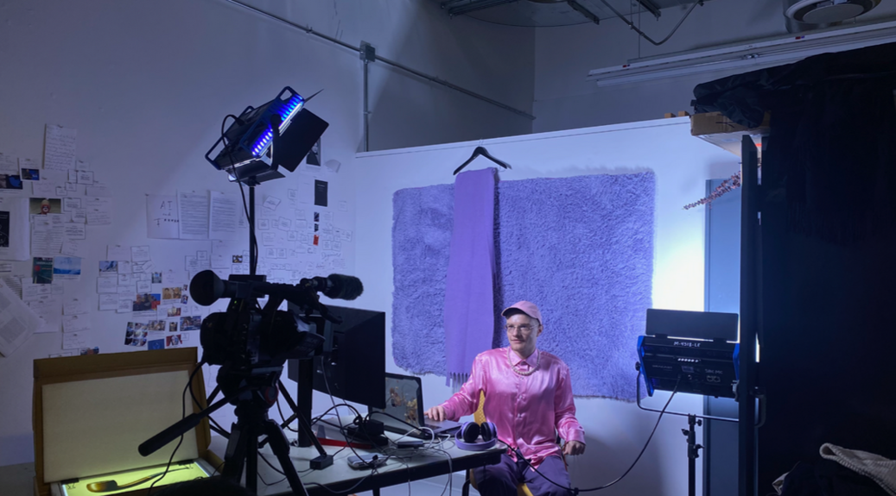
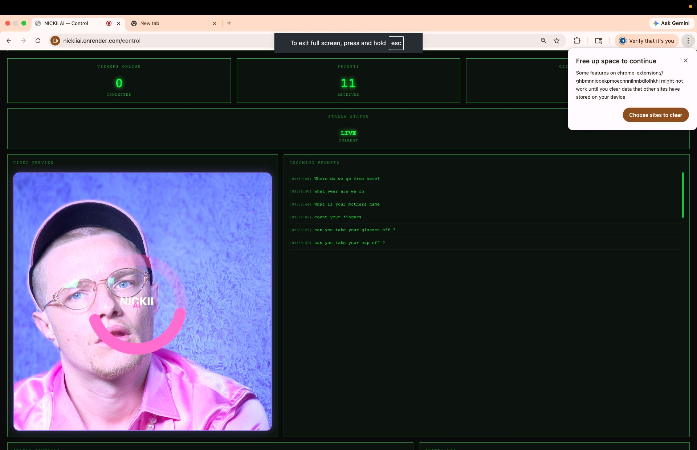
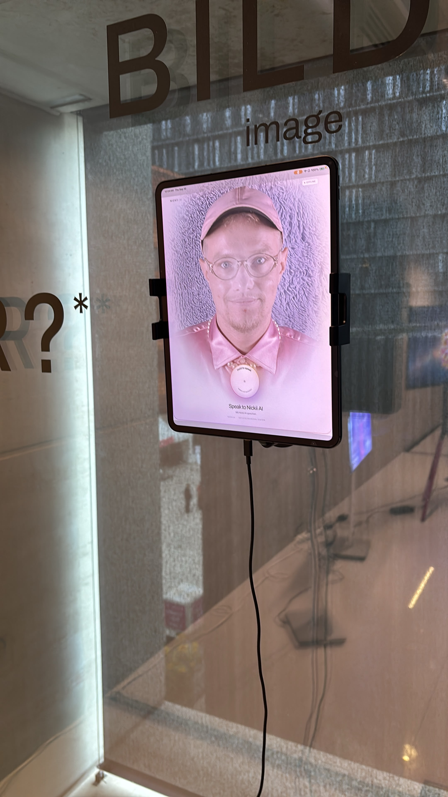

Performance: Nickii AI
2026 · Hybrid Performance and Installation
Performance: Nickii AI is a hybrid performance and installation by Nickii Schamborski, 2026. Shown at AT/SP x Ars Electronica Campus Exhibition (2026).



About the work
Nickii Ai is a hybrid performance that allows visitors in a room to ask an AI questions without realizing the AI is me streaming from another room. I have designed looping videos of my face, a thinking animation, and an entire user interface to create the illusion of artificial intelligence. This performance questions what it means to be an artist in times of AI, and how our perception of humanity, empathy, and connection suddenly changes when we can simply prompt a machine for conversation. The performance has an uncanny quality, as spectators slowly realize that I might be human - sweating, stuttering, and synthesizing answers without a database.
Details
- Year
- 2026
- Type
- Hybrid Performance and Installation
- Specs
- Exhibited at Ars Electronica 2026
- Institution / place
- School of the Art Institute of Chicago
Shown at
- AT/SP x Ars Electronica Campus Exhibition, Ars Electronica, Linz, Austria (2026)